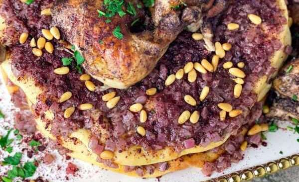

back
- four chicken legs
- taboon bread
- ½ cup extra virgin olive oil
- three red onions
- 2-3 tablespoons sumac
- 1teaspoon allspice
- ½ teaspoon cinnamon
- ¼ black pepper
- ½ cup lemon juice
- 1 teaspoon sea salt
- ¼ cup toasted pine nuts

- Prepare chicken for roasting, rub the chicken with olive,
then add lemon juice season with spices, salt, and sumac,
and mix well. Place in a roasting pan keeping the skin side up.
- Roast chicken in a preheated oven at 350 F for 50-60 minutes.
For extra brownish color place under the roaster for 2-4 minutes.
- Meanwhile, chop onions finely.
- In a pot heat olive oil over medium-high heat, then add chopped
onions. Cook until onions are soft and caramelized, about 10-15
minutes. Then season with salt, black pepper, and sumac.
- With a spoon take some of the caramelized onions and spread
over the bread. Then place it over the broiler for 2-3 minutes.
- When ready to serve, place a piece of chicken over the bread and
sprinkle with toasted pine nuts and almonds.